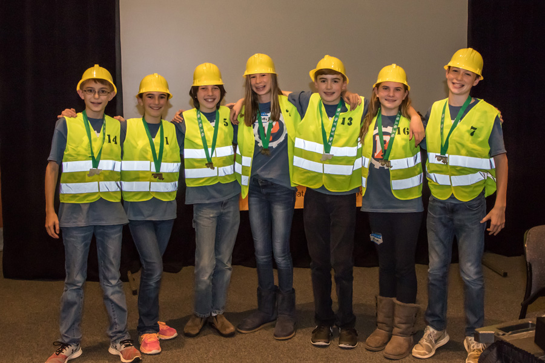
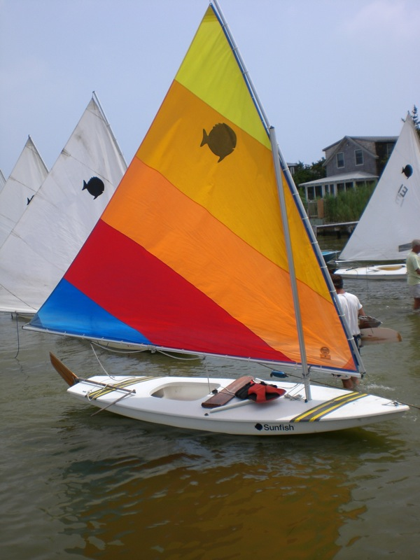

Programming.
On this page, you can download the the two games I have programmed and play them on your PC.

Robotics.
This page will allow you to navigate between the three types of robotics I have participated in over my years in Robotics.
